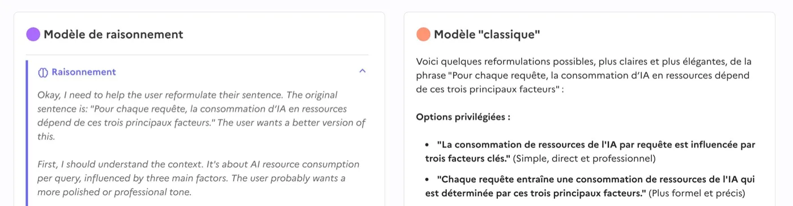

Ce qui fait consommer un modèle
La taille, le texte produit, l'architecture. Et ce que la mesure en dit.
Une quantité de paramètres
8B = 8 milliards
Un paramètre est un nombre appris pendant l'entraînement. Il règle comment le modèle transforme une entrée en sortie.
Sur compar:IA, le compte s'affiche en tête de la fiche : « 8 mds de paramètres ».
Fiche IBM/Granite 4.1 8B sur compar:IA.
Les classes de taille
| Classe | Paramètres |
|---|---|
| XS | moins de 15 milliards |
| S | de 15 à 60 milliards |
| M | de 60 à 100 milliards |
| L | de 100 à 400 milliards |
| XL | plus de 400 milliards |
Seuils de classe de taille appliqués par compar:IA.
Quatre modèles, quatre tailles
| Modèle | Paramètres | Classe |
|---|---|---|
| Anthropic/Claude Sonnet 5 | non publié | Taille estimée XL |
| Mistral AI/Mistral Small 4 | 119 milliards | L |
| Swiss AI/Apertus 70B | 70 milliards | M |
| Google/Gemma 4 26B A4B | 26 milliards | S |
Catalogue compar:IA, modèles en service. Lettres calculées avec les seuils de la diapositive suivante.
Le texte devient des jetons
Le modèle ne lit pas des lettres ni des mots : il lit des morceaux.
Un mot courant tient en un jeton. Un mot rare est découpé. L'espace part avec le morceau qui suit.
Découpage indicatif : les tokeniseurs varient d'un modèle à l'autre. Sur compar:IA, un jeton vaut à peu près quatre lettres.
Un jeton, puis on recommence
Le modèle ne rédige pas une réponse : il ajoute un jeton, puis relit tout, puis en ajoute un autre.
Une réponse de trois cents mots demande de l'ordre de quatre cents tours de cette boucle. C'est pourquoi la consommation se compte par jeton produit, et non par message.
À quoi servent les jetons
Découper
Le texte devient des morceaux que le modèle sait traiter.
Mesurer
Ils disent ce que le modèle peut traiter d'un coup.
Facturer
Le coût d'utilisation se compte au jeton, en entrée et en sortie.
Les mélanges d'experts
Plusieurs experts dans un même modèle, dont une poignée seulement travaille pour chaque jeton.
- Le jeton entre.
- Un routeur choisit les experts les plus adaptés.
- Seuls ceux-là calculent.
- La sortie part.
Au total, et vraiment actifs
Au total
119 mds
Tout doit tenir dans la mémoire de la machine.
Actifs par jeton
6 mds
Seuls ceux-là calculent, et dépensent de l'électricité.
La fiche d'un modèle ouvert en mélange d'experts porte la ligne « Dont N mds actifs ».
Fiche de Mistral AI/Mistral Small 4 sur compar:IA.
Avantages et limites
Avantages
- Moins de calcul pour chaque jeton produit.
- 45 % d'électricité en moins qu'un modèle dense de taille comparable.
- Donc moins cher à utiliser.
Désavantages
- Prend beaucoup de place dans la mémoire de la machine.
- Plus complexe à développer.
- Peut moins bien généraliser.
Arcep et PEReN, mai 2026, pour l'écart moyen entre mélanges d'experts et modèles denses de taille équivalente.
Deux façons de répondre
Modèle « classique »
Il écrit la réponse directement. Ce que vous lisez, c'est tout ce qu'il a produit.
Modèle de raisonnement
Il écrit d'abord un brouillon pour lui-même : il pose le problème, essaie, se corrige. Puis il rédige la réponse.
Même architecture, mêmes paramètres : seule change la quantité de texte produite.
Le brouillon, à l'écran
À gauche, le raisonnement déplié ; à droite, la réponse directe. Le brouillon est souvent replié ou caché.

Le brouillon se paie aussi
Réponse directe
38
jetons produits par question.
Réponse raisonnée
543
jetons de réflexion par question, avant la réponse.
Ces jetons de réflexion sont des jetons de sortie, comme la réponse. Invisibles pour le lecteur, ils comptent dans le total.
Dauner et Socher, « Energy costs of communicating with AI », Frontiers in Communication, 2025.
Trois leviers, une fois mesurés
Le régulateur français a fait tourner 22 modèles ouverts sur un même calculateur.
Mélange d'experts
− 45 %
face à un modèle dense de taille comparable.
Quantification
− 39 %
en arrondissant les paramètres à 8 ou 4 bits.
Raisonnement
+ 92 %
quand le mode réflexion est activé.
Arcep et PEReN, mai 2026. Moyennes sur 22 modèles ouverts, calculateur Jean Zay.
La taille ne dit pas tout
Le régulateur français a fait tourner 22 modèles ouverts sur un même calculateur, à usage et matériel identiques.
- Des modèles de tailles très différentes peuvent dépenser autant l'un que l'autre.
- Des modèles à faible consommation obtiennent des résultats équivalents à des modèles bien plus gourmands.
Choisir sobre ne revient donc pas forcément à sacrifier la qualité.
Arcep et PEReN, « Intelligence artificielle générative : quels défis environnementaux ? », mai 2026. Modèles de 3 à 123 milliards de paramètres, calculateur Jean Zay.
Deux modèles, la démonstration
Alibaba/Qwen 3.5 35B A3B
35 mds, dont 3 actifs.
Swiss AI/Apertus 70B
70 mds, tous actifs.
Deux fois moins de paramètres, quatre fois moins d'énergie par jeton, et une classe d'écart. Les deux sont dans l'arène.
Catalogue compar:IA : 166 Wh par million de jetons pour le premier, 658 pour le second.
Tout le catalogue, d'un coup d'œil
Ouvert, dense Ouvert, mélange d'experts Propriétaire, taille estimée
Catalogue compar:IA, 32 modèles en service. Consommation calculée par EcoLogits 0.10.2 ; les seuils de classe sont ceux de compar:IA. Les deux axes sont logarithmiques : chaque graduation vaut trois fois la précédente.
Ce que le nuage montre
La taille compte
Le nuage monte de gauche à droite. Un modèle plus gros consomme plus, toutes choses égales.
L'architecture aussi
À 400 milliards de paramètres, Llama 4 Maverick tient en classe D. Un modèle dense de taille voisine se retrouve en E.
Les losanges sont plus bas
Les mélanges d'experts occupent presque tout le bas du nuage.
La consommation suit à peu près la moyenne entre la taille totale et la taille active. Ni l'une ni l'autre ne suffit seule.
Coefficient de corrélation de 0,97 entre le logarithme de la consommation et celui de cette moyenne, sur les 32 modèles, contre 0,92 pour la taille totale seule et 0,80 pour la taille active seule.
Et les images ?
En 2024, une mesure sur 88 modèles donnait un ordre de grandeur net.
Écrire du texte
0,05 Wh
par génération, en moyenne.
Produire une image
2,9 Wh
par image, en moyenne. Soixante fois plus.
Luccioni, Jernite et Strubell, « Power Hungry Processing: Watts Driving the Cost of AI Deployment? », FAccT 2024. Mesures sur cartes A100, une requête à la fois, sur des modèles de 2023.
Le rapport s'est resserré
Mesures de 2025, sur des modèles ouverts.
| Énergie par réponse ou par image | |
|---|---|
| Llama 3.1 8B, une réponse | 0,03 Wh |
| Stable Diffusion 3, une image | 0,63 Wh |
| Llama 3.1 405B, une réponse | 1,86 Wh |
Une réponse d'un très grand modèle coûte aujourd'hui trois fois une image. Les modèles de diffusion se sont optimisés pendant que le texte s'allongeait.
Mesures de Jae-Won Chung, ML.Energy, rapportées par la MIT Technology Review, mai 2025. L'énergie des cartes y est doublée pour couvrir le reste du centre : c'est une hypothèse.
Et la vidéo ?
Aucun fournisseur ne publie de chiffre. Ni pour Sora, ni pour Veo, ni pour Runway.
Le seul repère mesuré vient d'un modèle ouvert, CogVideoX : environ 940 Wh pour cinq secondes de vidéo, soit l'ordre de grandeur d'un millier de réponses écrites.
Les chiffres qui circulent pour les modèles propriétaires sont déduits du temps de réponse. Ils mesurent surtout les hypothèses de leurs auteurs.
Mesure de Sasha Luccioni sur CogVideoX, rapportée par la MIT Technology Review, mai 2025. Cinq secondes à seize images par seconde, sur un seul modèle et une seule configuration.
Ce qu'il faut retenir
- Le compteur, ce sont les jetons produits. Une réponse longue coûte plus qu'une réponse courte.
- Un mélange d'experts n'active qu'une part de ses paramètres : 45 % d'électricité en moins qu'un dense de taille comparable.
- Les plus grands modèles restent les plus gourmands, mais entre tailles voisines le classement se joue ailleurs.
- Le raisonnement se réserve aux questions qui le méritent.